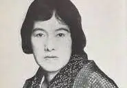

目次たまふ
プロフィール見たまふことなかれ


与謝野晶子（よさの あきこ、1878年12月7日 - 1942年5月29日）は、日本の歌人・作家・思想家。大阪府堺市出身。本名は鳳 晶子（ほう あきこ）。
やり遂げたまふこととそれがもたらしたまふこと
女性の自由や平等を訴える先駆的な表現で知られ、近代文学に大きな影響を与えました。また、夫の与謝野鉄幹とともに文学結社「新詩社」を主導し、多くの文学者を育てました。